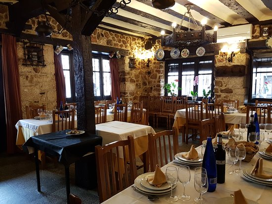

Todo empezó con un almacén en 1995. Desde el mostrador, oficinistas de la zona despachaban comidas para llevar. Entusiasmados decidimos ampliar la propuesta y en el 2000 inauguramos nuestro restaurante en Villa Santa Rita. De los sándwiches y las ensaladas pasamos a la cocina gourmet con gran variedad de platos. El restaurante logró un mix entre lo tradicional y lo moderno, sintetizando nuestra propuesta: alta cocina en modalidad express. Nuestra esquina de Terrada y Jose Ingenieros mantiene su espíritu inicial. Allí podrán encontrar todo lo que se necesita para pasar una jornada de trabajo: comidas para llevar, productos para el desayuno y la merienda. El Bodegón es más, mucho más que aquel almacén de 1991. Esperamos poder seguir compartiendo más momentos juntos a lo largo de los años. Saludos, El Farol.

